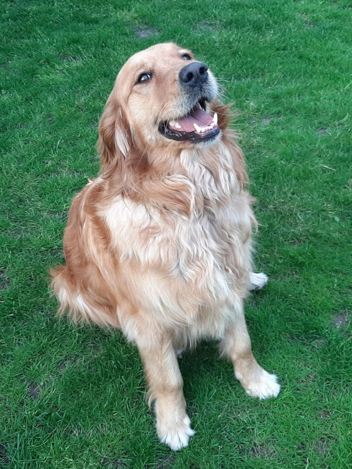

A Golden Retriever egy kedves, barátságos kutyafajta, mely Skóciából származik.
A fajta tudományos megnevezése: Golden Retriever - Canis lupus familiaris.
Fontos! Ha gazdi szeretnél lenni, nézz utána, hogy a felelõs kutyatartással kapcsolatban milyen ajánlások és kötelezettségek vannak!
Okos, könnyen képezhetõ
Szelíd,családbarát
Nagyon jó vadászkutya
Fotók Goldiról
Ha szeretnél még több kutyás fotót nézegetni, látogasd meg a Pixabay portál - Goldenek fotó oldalát!
A videón is láthatod, hogy Goldi nagyon szeret a földön hemperegni, amely miatt általában koszosan jövünk haza a sétából.
Vissza az oldal tetejére Vissza az oldal tetejére